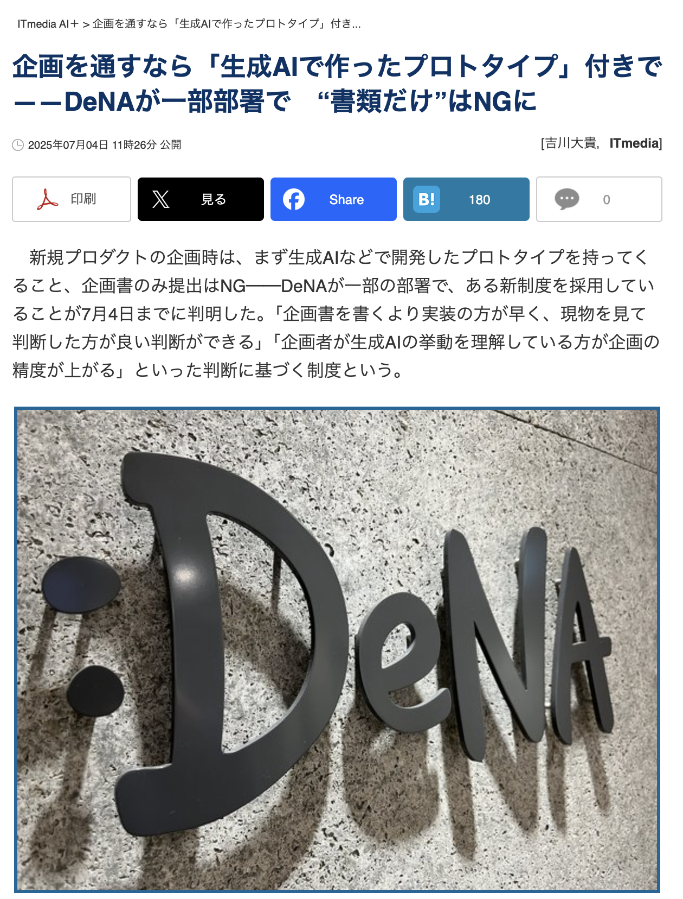
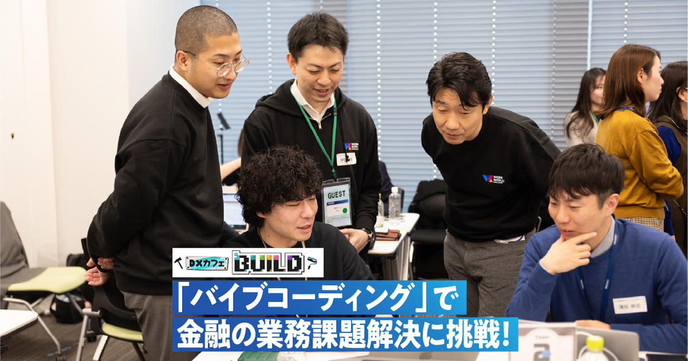
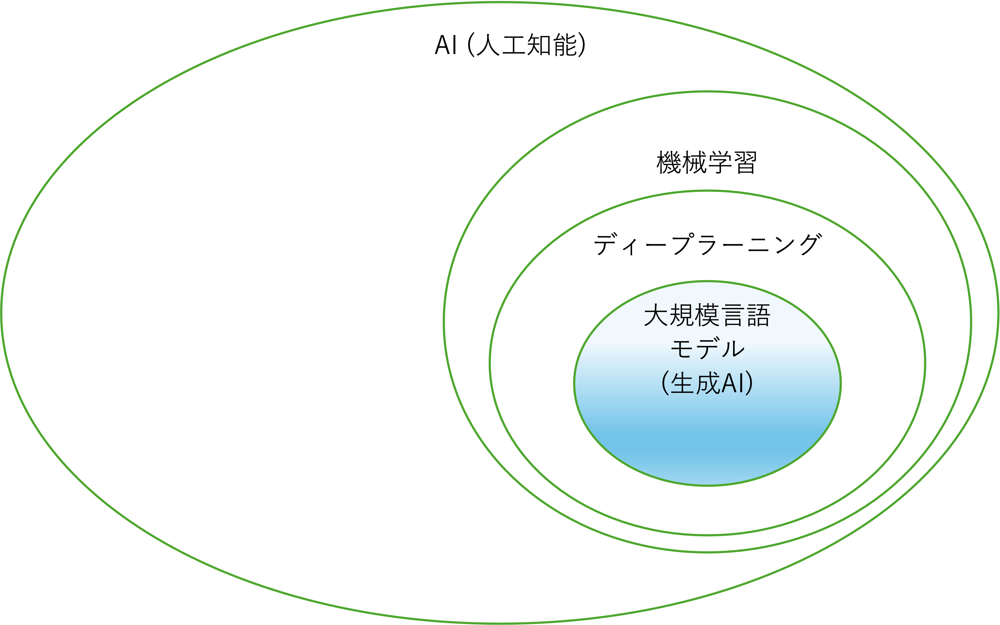
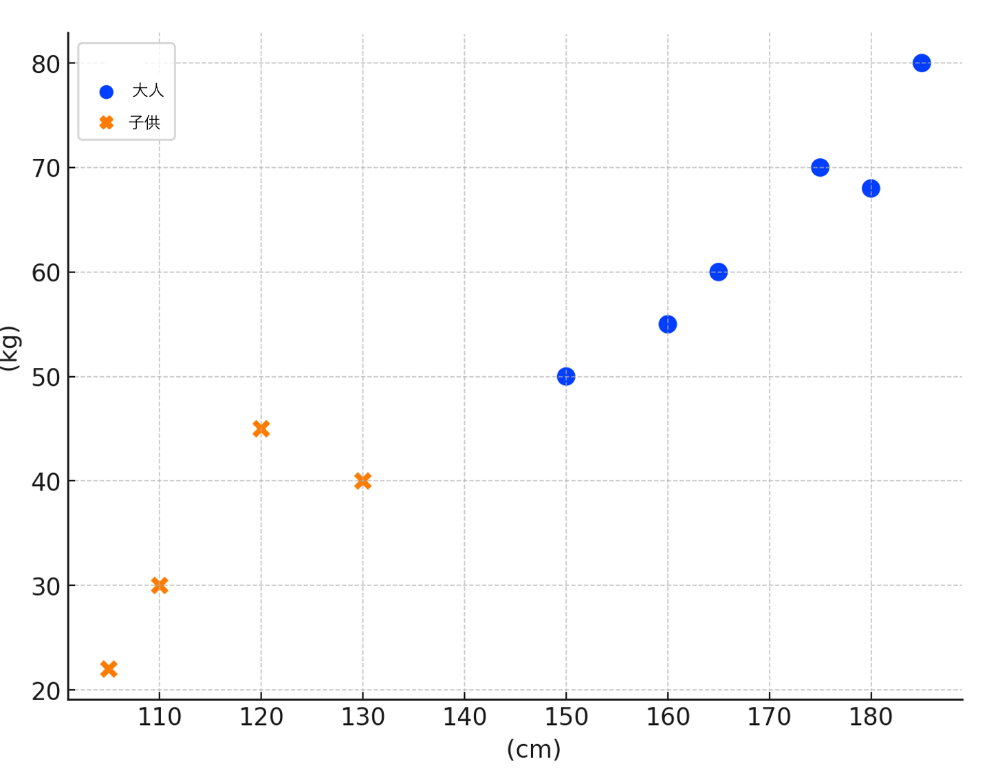
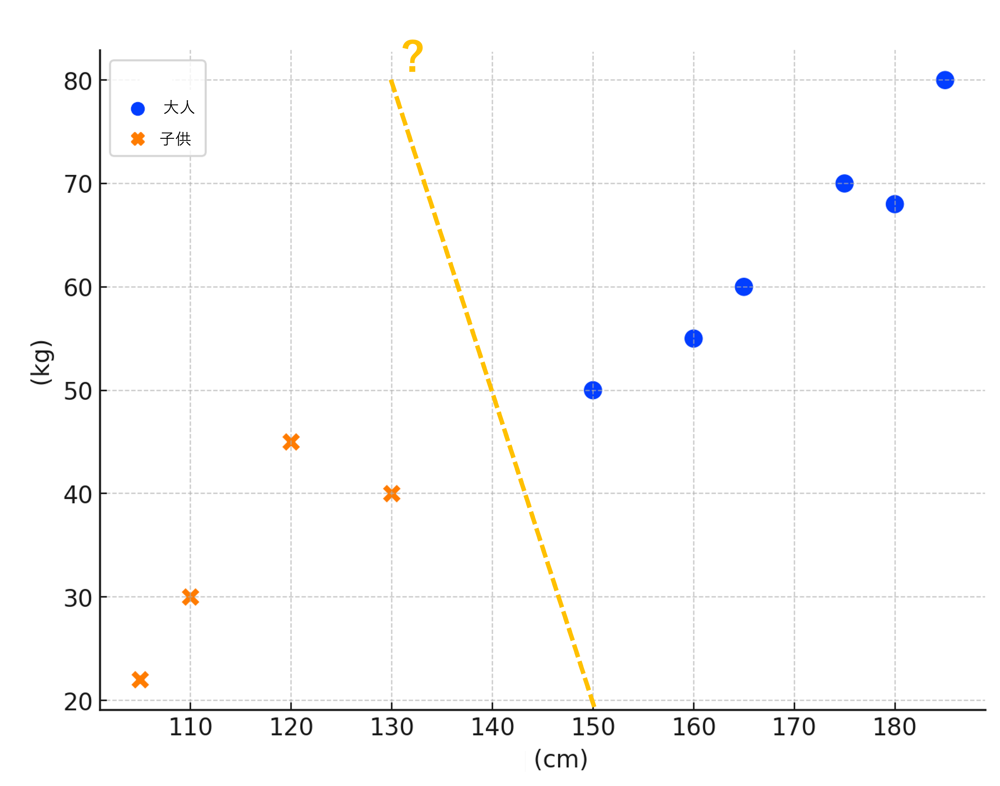
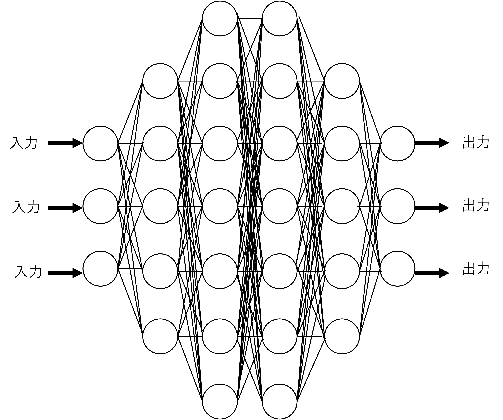
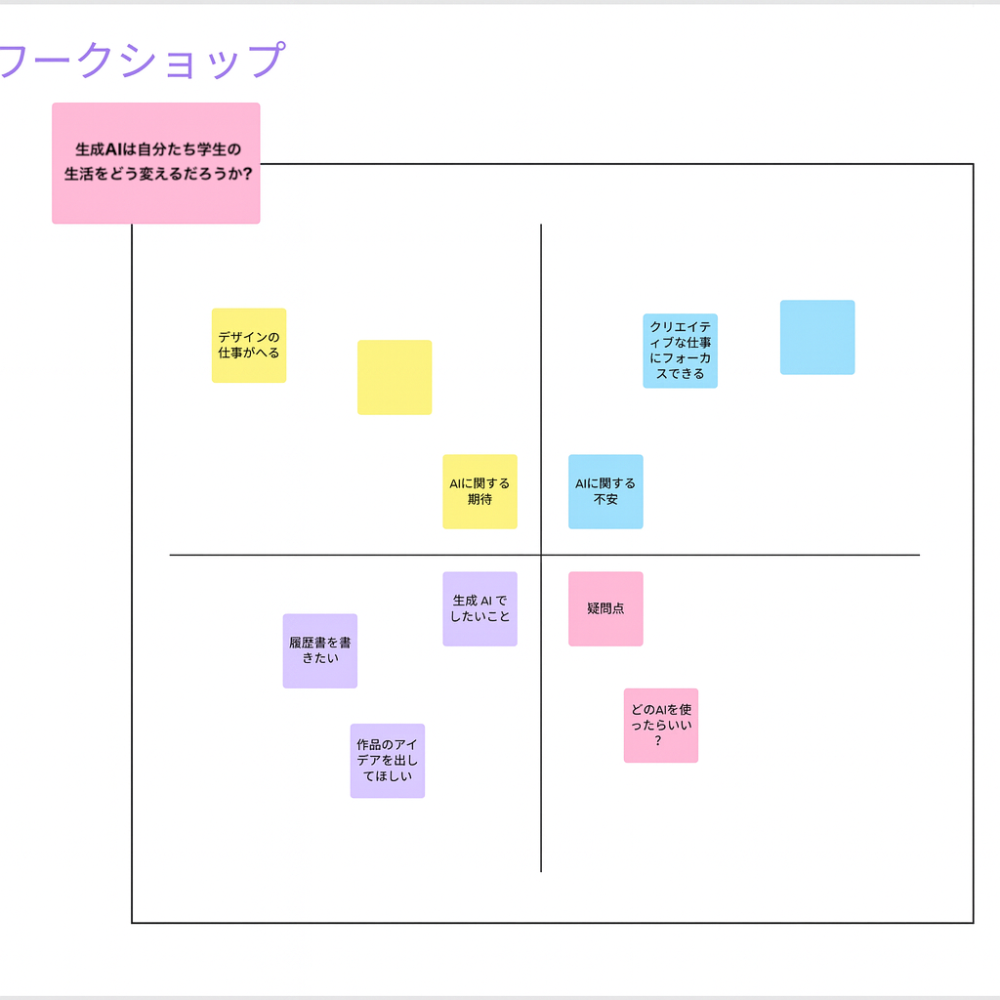

このコースは人工知能（AI）の基本的な理論とその活用についての理解を提供することを目的とします。具体的には、AIの基礎概念、倫理的考慮事項、そしてAI技術を使用して調査やドキュメント、アプリケーションを作成する実践的な方法を学びます。
このコースを通じて、AI技術の効果的かつ倫理的な使用に必要な知識とスキルを習得し、将来のキャリアや創作活動への適用につなげることができます。
| 回数 | 1 (9/25) |
2 (10/2) |
3 (10/9) |
4 (10/16) |
5 (10/23) |
6 (11/6) |
7 (11/13) |
|---|---|---|---|---|---|---|---|
| テーマ | AI基礎 | プロンプトエンジニアリング:インプット(要約・翻訳) | AIの活用と倫理 | AI活用アプリ生成① | AI活用アプリ生成② | 総合演習 | 総合演習 |
| 担当講師 | 伊藤、髙田 | 髙田 | 伊藤 | 伊藤 | 髙田 | 髙田、伊藤 | 伊藤、髙田 |
AIを活用しているか・授業に期待していることについて教えてください。
2025年7月4日のニュース

新規プロダクトの企画に、生成AIなどで作った試作品を添える制度。
AIイノベーション事業本部の全員が対象。ビジネス職・デザイナー職も、実物で企画を検討する。
2026年3月の取り組み

「自らの業務課題を解決するプロトタイプを実際に開発する」
「DXカフェ BUILD」で事務企画・業務監査などの5チームが、AIへの自然言語の指示で1日かけて試作品を開発。
統制やセキュリティを重視する銀行・金融でも、現場からAIで課題解決。
自分の専門分野の課題を見つけ、動くものを作って確かめる力を身につけよう。
効果: 問題解決の筋道を立てる力を鍛える
学ばないと... エラーの原因がわからず、ものづくりに関われない
効果: プログラミングは現代の共通言語
学ばないと... ツールを「使うだけの人」になり、主導権を握れない
効果: アプリやサービスを自分で作れる
学ばないと... 「誰かに頼まないとできない人」になってしまう
効果: 調べ物・デバッグ・資料作成が何倍も速くなる
使わないと... 同じ課題でも数倍かかり「遅い人」と見られる
効果: 自分専属の先生や相棒のように使える
使わないと... 学ぶ方法がわからず諦めてしまう
効果: AI活用はすでに社会の前提
使わないと... 職場でも大事な仕事を任せてもらえない
AIの活用は便利で必要性がある一方で、注意も必要です。次回以降の授業で詳しくお伝えしますが、まずは以下の点を意識しておきましょう。
下の指示例を入力して送信。
生成されたゲームをプレビューで実際に遊んでみよう。
「敵を遅くして」「背景を宇宙にして」など、追加で指示。
動かない場合も、状況を伝えて修正しよう。
ブラウザで遊べるシューティングゲームを作ってください。左右の矢印キーで自機を動かし、スペースキーで弾を発射します。弾が敵に当たると得点が増え、ゲームオーバー後はもう一度遊べるようにしてください。
人間の知的行動をコンピューターで模倣する技術、またはその研究分野
チューリングの問いと、チューリングテストの提案
ダートマス会議で「Artificial Intelligence」という用語が登場
初期の成功と、研究が停滞する「冬の時代」
エキスパートシステムの商業的成功
インターネットの普及と大量データ
機械学習とデータ駆動型アプローチが主流に
ディープラーニングが画像認識コンペティションで成功
AI技術の急速な発展と、応用分野の拡大
人間のように新しいコンテンツを「生成」することができるAI技術
大量のデータから学習し、パターンを把握して全く新しいコンテンツを生み出す
生成AIを使い、目標に向けて手順を考え、検索やコード実行などのツールを使いながら、結果を確認して作業を進める仕組み。
例：ゲームを作る → 動作を確かめる → エラーを直す。
大量のテキストデータから学習し、人間のように自然言語を理解し生成するAI技術
代表例: GPT、Gemini、Claude等

コンピュータがデータから学習し、タスクを改善する技術
大規模言語モデルの学習プロセスにも応用される
| 体重(kg) | 身長(cm) | 分類 | 体重(kg) | 身長(cm) | 分類 |
|---|---|---|---|---|---|
| 70 | 175 | 大人 | 30 | 110 | 子供 |
| 55 | 160 | 大人 | 22 | 105 | 子供 |
| 45 | 120 | 子供 | 80 | 185 | 大人 |
| 50 | 150 | 大人 | 60 | 165 | 大人 |
| 68 | 180 | 大人 | 40 | 130 | 子供 |

数式例: w1(重み1) × 身長 + w2(重み2) × 体重 < 190

機械学習の一つの手法で、多層ニューラルネットワークを使用した学習方法
大規模言語モデルの背後にある主要な技術

明確なルールや手続きに基づいて意思決定を行うシステム
伝統的なプログラミングの一形態
初期のエキスパートシステム → 現在は機械学習・ディープラーニングとの組み合わせ

「生成AIは自分たち学生の生活をどう変えるだろうか？」
歴史に基づき、AI（人工知能）とは何かを考察
現在、最も注目されている生成AIを理解
💡 どんどん使おう！！
自分たちのAIへの考えを整理し、共有
生成AIのユースケースを知ろう
AIに意図が伝わる指示を考えよう